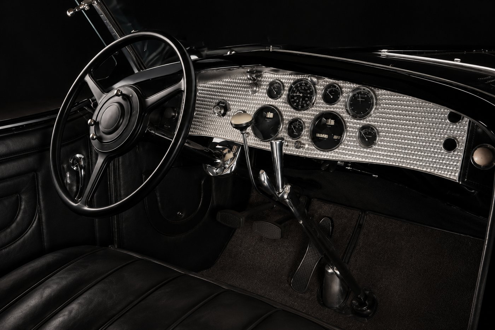
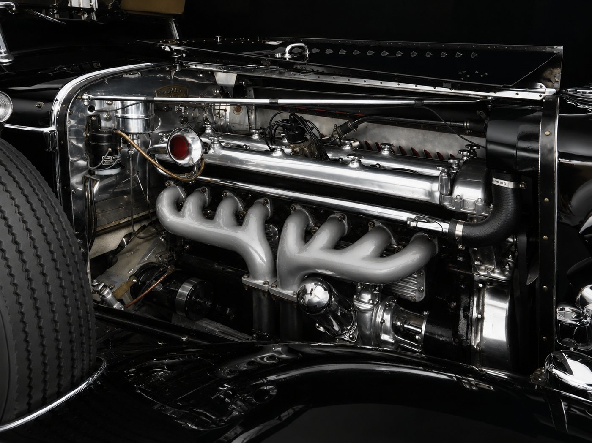

The car arrived at the workshop in pieces — literally. What had once been a Duesenberg Model J sat in a shipping container as a chassis, a stack of body panels, and three boxes of hardware nobody had bothered to label. The restoration that followed took four years and, by the shop's own estimate, somewhere north of six thousand hours.

Why this car, and why so long
Duesenbergs occupy a strange place in American automotive history: they were the cars wealthy Americans bought before they had any obligation to buy American at all, engineered to compete directly with the best of Europe. Fewer than 500 Model Js were built, and survivors are scattered across private collections, meaning replacement parts either don't exist or have to be fabricated from scratch.
"You're not restoring a car. You're restoring a decision someone made in a factory in Indiana in 1934, and you have to understand that decision before you can rebuild it."
The parts nobody sees
Roughly seventy percent of the restoration budget went toward things a buyer would never notice at a glance — the correct thread pitch on decades-obsolete fasteners, period-accurate wiring insulation, an engine rebuild that matched original tolerances rather than modern ones that would technically perform better but weren't authentic.
That distinction matters enormously to collectors. A car restored to run well and a car restored to be correct are two different projects, and the second one is far more expensive, far slower, and — to the people who buy these cars — the only version worth doing.
